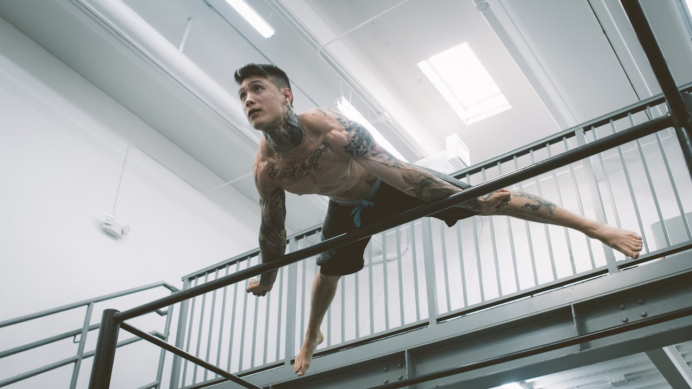

Кріс Херіа (Chris Heria) - один із сучасних ідеологів калістенікі Кріс Херія - молодий підприємець, офіційний член Barstarzz, творець Академія гімнастики, яка, стан, переросла в системі тренувань THENX. Про особисте життя Кріса не так багато інформації. Ізуго, що він з Флориди, Маймі. 1991 року народження і батька дитини. До занять калістенікой захоплювався скейтбордом, а до самої калістеніке долучився в 2011 році.
